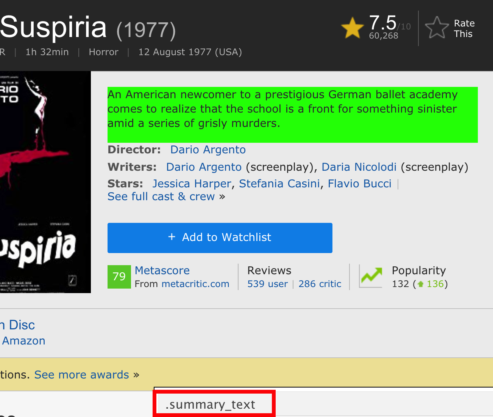
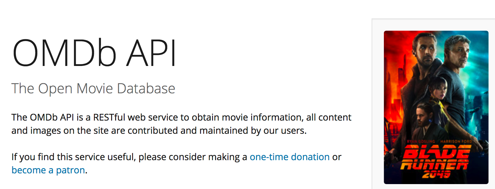
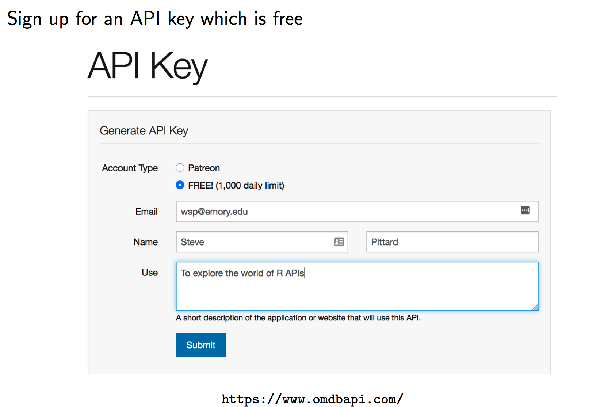
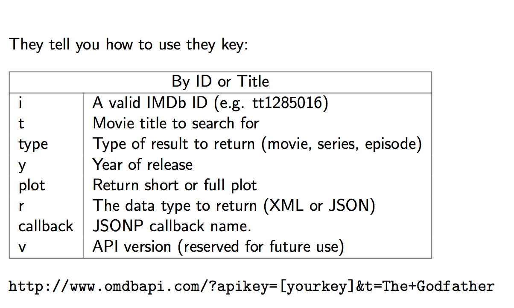
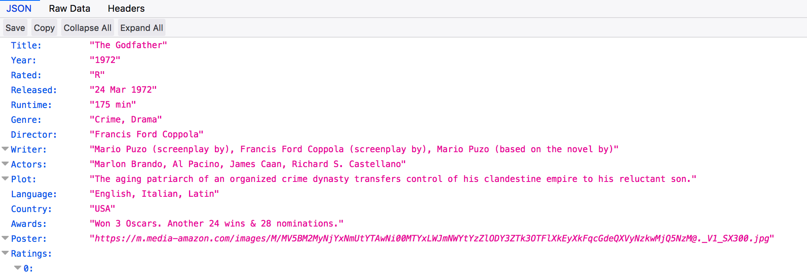
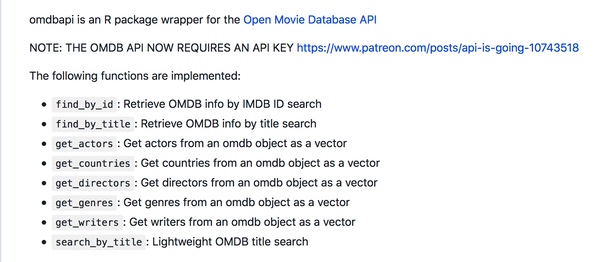
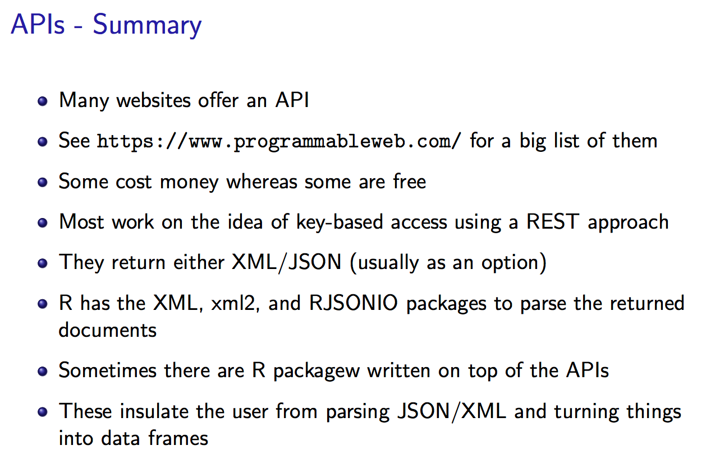
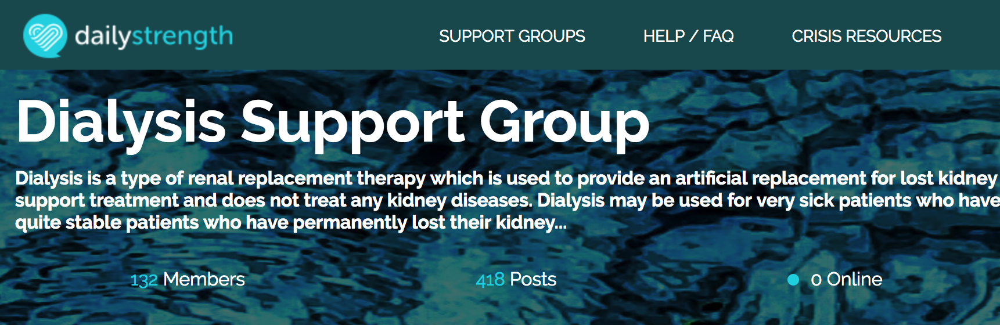
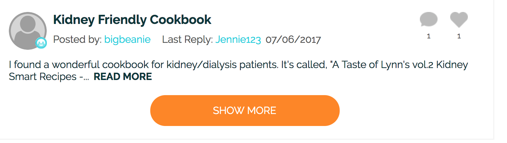
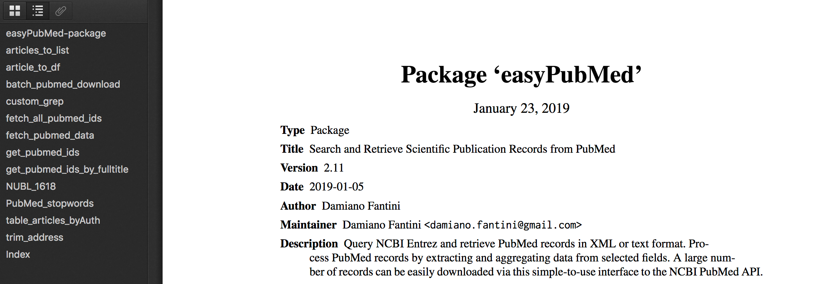

Chapter 4 APIs
4.1 OMDB
Let’s look at the IMDB page which catalogues lots of information about movies. Just got to the web site and search although here is an example link. https://www.imdb.com/title/tt0076786/?ref_=fn_al_tt_2 In this case we would like to get the summary information for the movie. So we would use Selector Gadget or some other method to find the XPATH or CSS associated with this element.

This pretty easy and doesn’t present much of a problem although for large scale mining of movie data we would run into trouble because IMDB doesn’t really like you to scrape their pages. They have an API that they would like for you to use.
url <- 'https://www.imdb.com/title/tt0076786/?ref_=fn_al_tt_2'
summary <- read_html(url) %>%
html_nodes(xpath="/html/body/div[2]/main/div/section[1]/section/div[3]/section/section/div[3]/div[2]/div[1]/div[1]/div[2]/span[3]") %>%
html_text()
summaryBut here we go again. We have to parse the desired elements on this page and then what if we wanted to follow other links or set up a general function to search IMDB for other movies of various genres, titles, directors, etc.



So as an example on how this works. Paste the URL into any web browser. You must supply your key for this to work. What you get back is a JSON formatted entry corresponding to ”The GodFather”movie.
url <- "http://www.omdbapi.com/?apikey=f7c004c&t=The+Godfather"
library(RJSONIO)
url <- "http://www.omdbapi.com/?apikey=f7c004c&t=The+Godfather"
# Fetch the URL via fromJSON
movie <- fromJSON("http://www.omdbapi.com/?apikey=f7c004c&t=The+Godfather")
# We get back a list which is much easier to process than raw JSON or XML
str(movie)## List of 25
## $ Title : chr "The Godfather"
## $ Year : chr "1972"
## $ Rated : chr "R"
## $ Released : chr "24 Mar 1972"
## $ Runtime : chr "175 min"
## $ Genre : chr "Crime, Drama"
## $ Director : chr "Francis Ford Coppola"
## $ Writer : chr "Mario Puzo, Francis Ford Coppola"
## $ Actors : chr "Marlon Brando, Al Pacino, James Caan"
## $ Plot : chr "The Godfather follows Vito Corleone, Don of the Corleone family, as he passes the mantle to his unwilling son, Michael."
## $ Language : chr "English, Italian, Latin"
## $ Country : chr "United States"
## $ Awards : chr "Won 3 Oscars. 31 wins & 30 nominations total"
## $ Poster : chr "https://m.media-amazon.com/images/M/MV5BM2MyNjYxNmUtYTAwNi00MTYxLWJmNWYtYzZlODY3ZTk3OTFlXkEyXkFqcGdeQXVyNzkwMjQ"| __truncated__
## $ Ratings :List of 3
## ..$ : Named chr [1:2] "Internet Movie Database" "9.2/10"
## .. ..- attr(*, "names")= chr [1:2] "Source" "Value"
## ..$ : Named chr [1:2] "Rotten Tomatoes" "97%"
## .. ..- attr(*, "names")= chr [1:2] "Source" "Value"
## ..$ : Named chr [1:2] "Metacritic" "100/100"
## .. ..- attr(*, "names")= chr [1:2] "Source" "Value"
## $ Metascore : chr "100"
## $ imdbRating: chr "9.2"
## $ imdbVotes : chr "1,742,506"
## $ imdbID : chr "tt0068646"
## $ Type : chr "movie"
## $ DVD : chr "11 May 2004"
## $ BoxOffice : chr "$134,966,411"
## $ Production: chr "N/A"
## $ Website : chr "N/A"
## $ Response : chr "True"movie$Plot## [1] "The Godfather follows Vito Corleone, Don of the Corleone family, as he passes the mantle to his unwilling son, Michael."sapply(movie$Ratings,unlist)## [,1] [,2] [,3]
## Source "Internet Movie Database" "Rotten Tomatoes" "Metacritic"
## Value "9.2/10" "97%" "100/100"Let’s Get all the Episodes for Season 1 of Game of Thrones
url <- "http://www.omdbapi.com/?apikey=f7c004c&t=Game%20of%20Thrones&Season=1"
movie <- fromJSON(url)
str(movie,1)## List of 5
## $ Title : chr "Game of Thrones"
## $ Season : chr "1"
## $ totalSeasons: chr "8"
## $ Episodes :List of 10
## $ Response : chr "True"episodes <- data.frame(do.call(rbind,movie$Episodes),stringsAsFactors = FALSE)
episodes## Title Released Episode imdbRating imdbID
## 1 Winter Is Coming 2011-04-17 1 9.1 tt1480055
## 2 The Kingsroad 2011-04-24 2 8.8 tt1668746
## 3 Lord Snow 2011-05-01 3 8.7 tt1829962
## 4 Cripples, Bastards, and Broken Things 2011-05-08 4 8.8 tt1829963
## 5 The Wolf and the Lion 2011-05-15 5 9.1 tt1829964
## 6 A Golden Crown 2011-05-22 6 9.2 tt1837862
## 7 You Win or You Die 2011-05-29 7 9.2 tt1837863
## 8 The Pointy End 2011-06-05 8 9.0 tt1837864
## 9 Baelor 2011-06-12 9 9.6 tt1851398
## 10 Fire and Blood 2011-06-19 10 9.5 tt18513974.2 The omdbapi package
Wait a minute. Looks like someone created an R package that wraps all this for us. It is called omdbapi

# Use devtools to install
devtools::install_github("hrbrmstr/omdbapi")library(omdbapi)
# The first time you use this you will be prompted to enter your
# API key
movie_df <- search_by_title("Star Wars", page = 2)
(movie_df <- movie_df[,-5])## Title Year imdbID Type
## 1 Solo: A Star Wars Story 2018 tt3778644 movie
## 2 Star Wars: The Clone Wars 2008–2020 tt0458290 series
## 3 Star Wars: The Clone Wars 2008 tt1185834 movie
## 4 Star Wars: Rebels 2014–2018 tt2930604 series
## 5 Star Wars: Clone Wars 2003–2005 tt0361243 series
## 6 Star Wars: The Bad Batch 2021– tt12708542 series
## 7 The Star Wars Holiday Special 1978 tt0193524 movie
## 8 Star Wars: Visions 2021– tt13622982 series
## 9 Robot Chicken: Star Wars 2007 tt1020990 movie
## 10 Star Wars: Knights of the Old Republic 2003 tt0356070 game# Get lots of info on The GodFather
(gf <- find_by_title("The GodFather"))## # A tibble: 3 × 25
## Title Year Rated Released Runtime Genre Director Writer Actors Plot Language Country Awards Poster Ratings Metascore imdbRating
## <chr> <chr> <chr> <date> <chr> <chr> <chr> <chr> <chr> <chr> <chr> <chr> <chr> <chr> <list> <chr> <dbl>
## 1 The … 1972 R 1972-03-24 175 min Crim… Francis… Mario… Marlo… The … English… United… Won 3… https… <named… 100 9.2
## 2 The … 1972 R 1972-03-24 175 min Crim… Francis… Mario… Marlo… The … English… United… Won 3… https… <named… 100 9.2
## 3 The … 1972 R 1972-03-24 175 min Crim… Francis… Mario… Marlo… The … English… United… Won 3… https… <named… 100 9.2
## # … with 8 more variables: imdbVotes <dbl>, imdbID <chr>, Type <chr>, DVD <date>, BoxOffice <chr>, Production <chr>, Website <chr>,
## # Response <chr># Get the actors from the GodFather
get_actors((gf))## [1] "Marlon Brando" "Al Pacino" "James Caan"
4.3 RSelenium
Sometimes we interact with websites that use Javascript to load more text or comments in a user forum. Here is an example of that. Look at https://www.dailystrength.org/group/dialysis which is a website associated with people wanting to share information about dialysis.

If you check the bottom of the pag you will see a button.

# https://www.dailystrength.org/group/dialysis
library(RSelenium)
library(rvest)
library(tm)
library(SentimentAnalysis)
library(wordcloud)
url <- "https://www.dailystrength.org/group/dialysis"
# The website has a "show more" button that hides most of the patient posts
# If we don't find a way to programmatically "click" this button then we can
# only get a few of the posts and their responses. To do this we need to
# use the RSelenium package which does a lot of behind the scenes work
# See https://cran.r-project.org/web/packages/RSelenium/RSelenium.pdf
# http://brazenly.blogspot.com/2016/05/r-advanced-web-scraping-dynamic.html
# Open up a connection
# rD <- rsDriver()
# So, you might have to specify the version of chrome you are using
# For someone reason this seems now to be necessary (11/4/19)
rD <- rsDriver(browser=c("chrome"),chromever="78.0.3904.70")
remDr <- rD[["client"]]
remDr$navigate(url)
loadmorebutton <- remDr$findElement(using = 'css selector', "#load-more-discussions")
# Do this a number of times to get more links
loadmorebutton$clickElement()
# Now get the page with more comments and questions
page_source <- remDr$getPageSource()
# So let's parse the contents
comments <- read_html(page_source[[1]])
cumulative_comments <- vector()
links <- comments %>% html_nodes(css=".newsfeed__description") %>%
html_node("a") %>% html_attr("href")
full_links <- paste0("https://www.dailystrength.org",links)
if (length(grep("NA",full_links)) > 0) {
full_links <- full_links[-grep("NA",full_links)]
}
ugly_xpath <- '//*[contains(concat( " ", @class, " " ), concat( " ", "comments__comment-text", " " ))] | //p'
for (ii in 1:length(full_links)) {
text <- read_html(full_links[ii]) %>%
html_nodes(xpath=ugly_xpath) %>%
html_text()
length(text) <- length(text) - 1
text <- text[-1]
text
cumulative_comments <- c(cumulative_comments,text)
}
remDr$close()
# stop the selenium server
rD[["server"]]$stop()4.4 EasyPubMed
So there is an R package called EasyPubMed that helps ease the access of data on the Internet. The idea behind this package is to be able to query NCBI Entrez and retrieve PubMed records in XML or TXT format.

The PubMed records can be downloaded and saved as XML or text files if desired. According to the package authours, “Data integrity is enforced during data download, allowing to retrieve and save very large number of records effortlessly.” The bottom line is that you can do what you want after that. Let’s look at an example involving home hemodialysis
library(easyPubMed)Let’s do some searching
my_query <- 'hemodialysis, home" [MeSH Terms]'
my_entrez_id <- get_pubmed_ids(my_query)
my_abstracts <- fetch_pubmed_data(my_entrez_id)
my_abstracts <- custom_grep(my_abstracts,"AbstractText","char")
my_abstracts[1:3]
[1] "Assisted PD (assPD) is an option of home dialysis treatment for dependent
end-stage renal patients and worldwide applied in different countries since more
than 40 years. China and Germany shares similar trends in demographic development
with a growing proportion of elderly referred to dialysis treatment. So far number
of patients treated by assPD is low in both countries. We analyze experiences in
the implementation process, barriers, and benefits of ass PD in the aging population
to provide a model for sustainable home dialysis treatment with PD in both countries. Differences and similarities of different factors (industrial, patient and facility
based) which affect utilization of assPD are discussed. AssPD should be promoted in
China and Germany to realize the benefits of home dialysis for the aging population
by providing a structured model of implementation and quality assurance."
[2] "End-stage renal disease (ESRD) is the final stage of chronic kidney disease
in which the kidney is not sufficient to meet the needs of daily life. It is necessary
to understand the role of genes expression involved in ESRD patient responses to
nocturnal hemodialysis (NHD) and to improve the immunity responsiveness. The aim of
this study was to investigate novel immune-associated genes that may play important
roles in patients with ESRD.The microarray expression profiles of peripheral blood
in patients with ESRD before and after NHD were analyzed by network-based approaches,
and then using Gene Ontology (GO) and Kyoto Encyclopedia of Genes and Genomes
pathway analysis to explore the biological process and molecular functions of
differentially expressed genes. Subsequently, a transcriptional regulatory network
of the core genes and the connected transcriptional regulators was constructed.
We found that NHD had a significant effect on neutrophil activation and immune
response in patients with ESRD.In addition, Our findings suggest that MAPKAPK3,
RHOA, ARRB2, FLOT1, MYH9, PRKCD, RHOG, PTPN6, MAPK3, CNPY3, PI3KCG, and PYGL
genes maybe potential targets regulated by core transcriptional factors,
including ARNT, C/EBPalpha, CEBPA, CREB1, PSG1, DAND5, SP1, GATA1, MYC, EGR2,
and EGR3."
[3] "Only a minority of patients with chronic kidney disease treated by
hemodialysis are currently treated at home. Until relatively recently, the
only type of hemodialysis machine available for these patients was a slightly
smaller version of the standard machines used for in-center dialysis treatments.
Areas covered: There are now an alternative generation of dialysis machines
specifically designed for home hemodialysis. The home dialysis patient wants
a smaller machine, which is intuitive to use, easy to trouble shoot, robust
and reliable, quick to setup and put away, requiring minimal waste disposal.
The machines designed for home dialysis have some similarities in terms of
touch-screen patient interfaces, and using pre-prepared cartridges to speed
up setting up the machine. On the other hand, they differ in terms of whether
they use slower or standard dialysate flows, prepare batches of dialysis fluid,
require separate water purification equipment, or whether this is integrated,
or use pre-prepared sterile bags of dialysis fluid. Expert commentary: Dialysis
machine complexity is one of the hurdles reducing the number of patients opting
for home hemodialysis and the introduction of the newer generation of dialysis
machines designed for ease of use will hopefully increase the number of patients
opting for home hemodialysis."